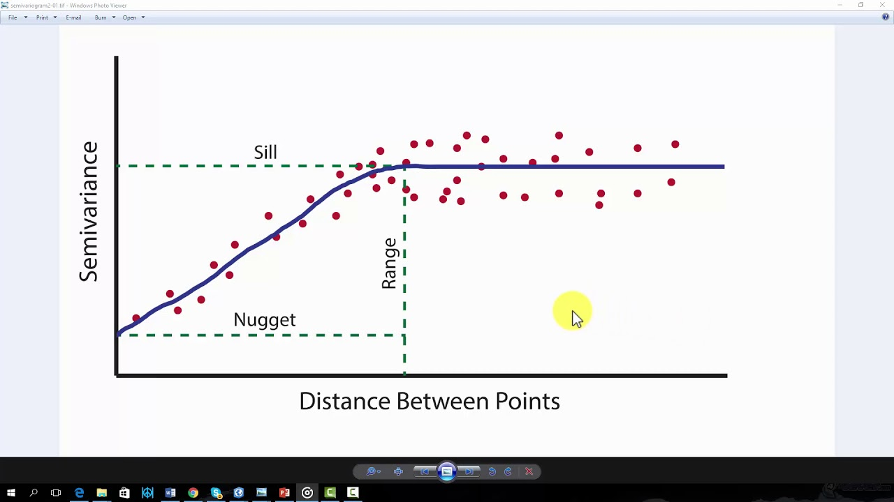

4. The Kriging Model#
4.1. Definition#
The
KrigingModel is ainterpolationmodel, basically, it analysis how to usespatial neighborsof location i to predict the value of \(y_i\)It is named after the South African mining engineer
Danie G. Krige.Krigingis widely used in fields such asgeology,hydrology, andenvironmental science.
4.2. Simple Kriging (SK)#
Simple Krigingassumes the mean of the underlying process is known and constant across the entire study area.
\(Z(x_0)\) is the estimated value at location \(x_0\)
\(\mu\) is the known mean of the process.
\(\lambda_i\) are the kriging weights
\(Z(x_i)\) are the known values at the sampled locations.
4.2.1. Weights Calculation#
The weights \(\lambda_i\) are calculated by solving the kriging system:
We assume \(y_i=w^T y_j+ε\), where \(y_j\) are spatial neighbors of \(y_i\), \(w\) is weight matrix
\(w\) is evaluated by semivariogram \(γ(x_i,x_j)\)
\(A∗w=b\to w=A^{−1} b\), where \(A\) is a matrix of \(γ(x_i,x_j)\), \(b\) is \(γ(y_i,y_j)\)

4.2.2. Python Sample Script#
import numpy as np
# Sample data (x, y, z)
# data: A 2D NumPy array where each row represents a point with coordinates (x,y) and a corresponding value z.
data = np.array([
[0, 0, 1.0],
[1, 0, 2.0],
[0, 1, 1.5],
[1, 1, 2.5]
])
# Known mean
# This value is assumed to be known and constant across the entire study area for Simple Kriging.
mu = 1.75
# Semivariogram function (spherical model for example)
def semivariance(h):
"""A function that defines the semivariogram model, which describes how the spatial correlation between points changes with distance.
a : The range parameter, beyond which points are no longer correlated.
c0: The nugget parameter, representing the semivariance at zero distance (accounting for measurement error or microscale variation).
c : The sill parameter, representing the value at which the semivariance levels off.
"""
a = 1 # range
c0 = 0.5 # nugget
c = 1.5 # sill
return c0 + c * ((3 * h / (2 * a)) - (h**3 / (2 * a**3))) if h < a else c0 + c
np.linalg.norm : A function to calculate the Euclidean distance between two points.
# Distance matrix
# A matrix where each element (i,j) dist_matrix: A matrix where each element i and j.
N = data.shape[0]
dist_matrix = np.zeros((N, N))
for i in range(N):
for j in range(N):
dist_matrix[i, j] = np.linalg.norm(data[i, :2] - data[j, :2])
# Semivariance matrix
# A matrix where each element is the semivariance between points i and j, calculated using the semivariogram function.
gamma_matrix = np.vectorize(semivariance)(dist_matrix)
# Distance to the prediction location
x0 = np.array([0.5, 0.5])
# An array containing the distances from each data point to the prediction location
dist_to_x0 = np.array([np.linalg.norm(data[i, :2] - x0) for i in range(N)])
# An array containing the semivariances between each data point and the prediction location.
gamma_to_x0 = np.vectorize(semivariance)(dist_to_x0)
# Kriging weights
lambda_weights = np.linalg.solve(gamma_matrix, gamma_to_x0)
# Simple kriging estimation
z0 = mu + np.dot(lambda_weights, data[:, 2] - mu)
print(f"Simple Kriging estimate at {x0}: {z0}")
Simple Kriging estimate at [0.5 0.5]: 1.75
4.3. Ordinary Kriging (OK)#
Ordinary Krigingassumes anunknownbutconstant meanwithin the neighborhood of the prediction location.The kriging estimator for a location \(x_0\) is given by
subject to the constraint: \(\sum_{i=1}^N\lambda_i = 1\)
4.3.1. Python Sample Script#
# Extended distance matrix (with ones for the Lagrange multiplier)
extended_dist_matrix = np.ones((N + 1, N + 1))
extended_dist_matrix[:N, :N] = gamma_matrix
# Extended semivariance vector (with one for the Lagrange multiplier)
extended_gamma_to_x0 = np.append(gamma_to_x0, 1)
# Kriging weights (including Lagrange multiplier)
extended_lambda_weights = np.linalg.solve(extended_dist_matrix, extended_gamma_to_x0)
# Ordinary kriging estimation
z0_ok = np.dot(extended_lambda_weights[:N], data[:, 2])
print(f"Ordinary Kriging estimate at {x0}: {z0_ok}")
Ordinary Kriging estimate at [0.5 0.5]: 2.312310601229375
4.3.2. Evolution of the Equations#
The kriging equations evolve from the general need to minimize the estimation variance while keeping the estimator unbiased. This involves:
Defining a linear estimator based on spatially correlated data.
Using the
semivariogramto modelspatial correlation.Solving a system of linear equations to obtain weights that minimize variance and ensure unbiasedness.
4.4. Universal Kriging#
Universal Kriging (UK), also known as Kriging with a Trend, is an extension of Ordinary Kriging.
It is used when the data exhibits a trend or deterministic function that can be modeled.
Unlike Ordinary Kriging, which assumes a constant mean within a local neighborhood, Universal Kriging accounts for a non-stationary mean that changes over the study area.
4.4.1. Universal Kriging Model#
Universal Kriging assumes that the underlying process can be decomposed into a deterministic trend component and a stochastic residual component.
\(Z(x)\) is the value at location \(x\)
\(m(x)\) is the deterministic trend function.
\(e(x)\) is the stochastic residual with mean zero and spatial correlation.
4.4.2. Trend function#
The trend \(m(x)\) can be modeled as a linear combination of known functions \(f_k(x)\):
\(f_k(x)\) are the basis functions (e.g.,
polynomials,harmonics).\(\beta_k\) are the coefficients to be estimated.
4.4.3. Kriging Estimator#
The Universal Kriging estimator for a location \(x_0\) is given by:
subject to \(\sum_{i=1}^N\lambda_if_k(x_i) = f_k(x_0)\) for \(k=1,2,...,p\)
4.4.4. Python Sample Script#
def basis_functions(x):
return np.array([1, x[0], x[1]])
# Distance matrix
N = data.shape[0]
dist_matrix = np.zeros((N, N))
for i in range(N):
for j in range(N):
dist_matrix[i, j] = np.linalg.norm(data[i, :2] - data[j, :2])
# Semivariance matrix
gamma_matrix = np.vectorize(semivariance)(dist_matrix)
# Distance to the prediction location
x0 = np.array([0.5, 0.5])
dist_to_x0 = np.array([np.linalg.norm(data[i, :2] - x0) for i in range(N)])
gamma_to_x0 = np.vectorize(semivariance)(dist_to_x0)
# Basis function matrix
F = np.vstack([basis_functions(data[i, :2]) for i in range(N)])
f0 = basis_functions(x0)
# Extended distance matrix (with basis functions for Lagrange multipliers)
extended_dist_matrix = np.zeros((N + F.shape[1], N + F.shape[1]))
extended_dist_matrix[:N, :N] = gamma_matrix
extended_dist_matrix[:N, N:] = F
extended_dist_matrix[N:, :N] = F.T
# Extended semivariance vector (with basis function values)
extended_gamma_to_x0 = np.concatenate([gamma_to_x0, f0])
# Kriging weights (including Lagrange multipliers)
extended_lambda_weights = np.linalg.solve(extended_dist_matrix, extended_gamma_to_x0)
# Universal kriging estimation
z0_uk = np.dot(extended_lambda_weights[:N], data[:, 2]) + np.dot(extended_lambda_weights[N:], f0)
print(f"Universal Kriging estimate at {x0}: {z0_uk}")
Universal Kriging estimate at [0.5 0.5]: 1.9508252147247764